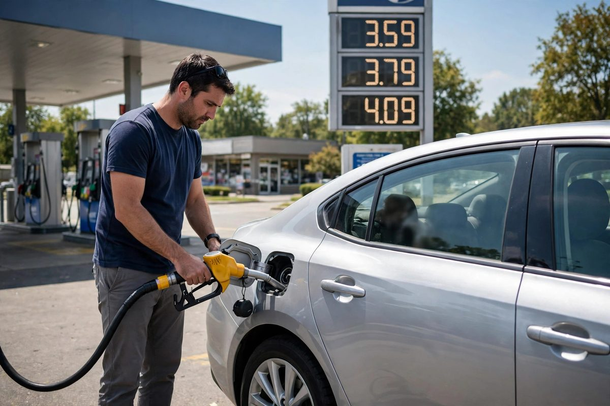
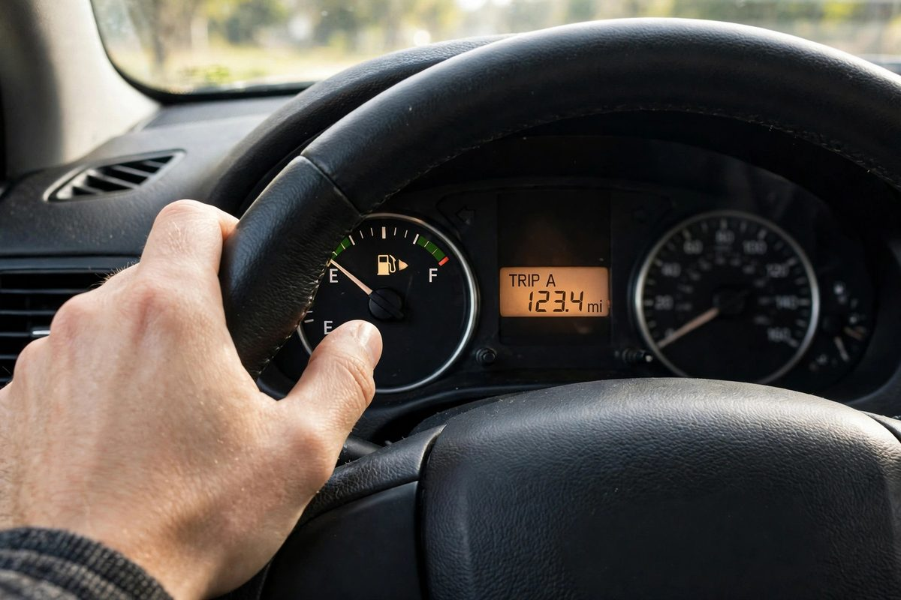
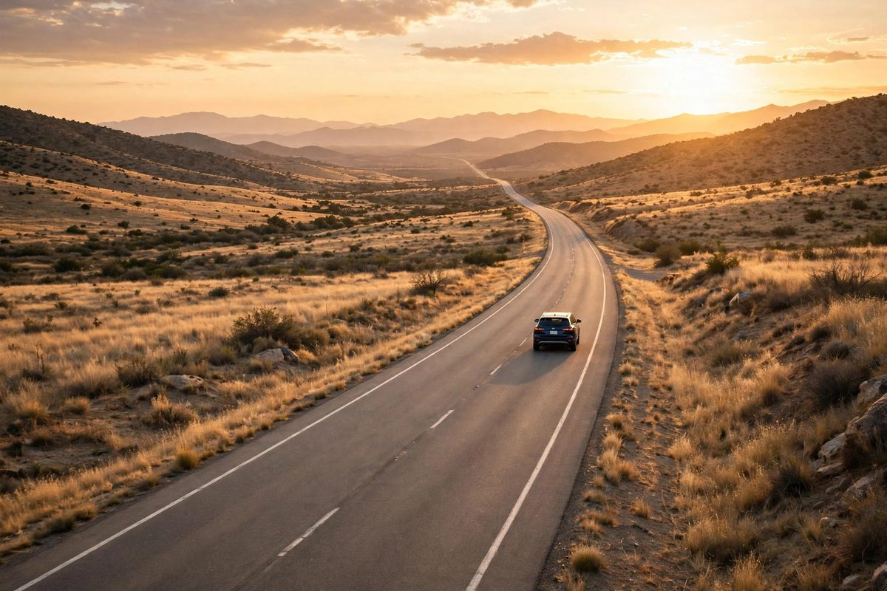

Home › Blog › How to Calculate Fuel Consumption
How to Calculate Fuel Consumption

Your car has an official fuel consumption figure on paper — but what does it actually use on the road you drive every day? The only way to know is to measure it yourself, and it takes no special tools: two fill-ups, the distance on your trip meter, and one simple division.
This guide shows you how to calculate fuel consumption step by step: the formula in litres per 100 km and in MPG, a worked example you can follow with your own numbers, and how to convert between the units used around the world. You will also learn what a good figure looks like and why your real consumption is usually higher than the official one.
What Is Fuel Consumption?
Fuel consumption is how much fuel your car uses to travel a set distance. Most of the world measures it in litres per 100 kilometres (L/100 km). In the United States, the same idea is flipped around and measured as miles per gallon (MPG): how far the car goes on one gallon.
The two units point in opposite directions. With L/100 km, a lower number is better, because it means less fuel for the same distance. With MPG, a higher number is better. A car at 6 L/100 km is more efficient than one at 9 L/100 km, just as a car at 39 MPG beats one at 26 MPG.
Knowing your real fuel consumption tells you what your car costs to run, lets you compare cars fairly, and warns you early if something is wrong.
The Fuel Consumption Formula
The formula is short. In metric units, divide the fuel you used by the distance you drove, then multiply by 100.
Fuel consumption (L/100 km) = fuel used (litres) ÷ distance driven (km) × 100
In US units, divide the miles you drove by the gallons you used.
MPG = miles driven ÷ gallons used
And for kilometres per litre, divide the distance by the fuel used.
km/L = distance driven (km) ÷ fuel used (litres)
The only thing you need to measure is the fuel used and the distance driven between two fill-ups. The next section shows you how to get both numbers right.
How to Calculate Fuel Consumption in 3 Steps
All you need is your car, a gas station, and a calculator. The method is called the fill-to-fill method.
Step 1 — Fill the tank and note the distance
Fill your tank until the pump clicks off, and stop there — do not top it up after the click. Then reset your trip meter to zero, or write down the odometer reading. This first fill-up is only your starting point: the fuel in it does not count.
Drive normally until you need fuel again, ideally using most of a tank. A very short test, like 50 km, gives a jumpy result.

Step 2 — Fill up again and record both numbers
At the next fill-up, fill the tank until the pump clicks off again, at the same pump if you can. The fuel the pump adds is the fuel your car used since the first fill-up. Write it down, along with the distance on your trip meter.
Stopping at the first click both times matters: it means the tank is filled to the same level each time, so the fuel added equals the fuel used.
Step 3 — Do the division
Divide the fuel used by the distance driven and multiply by 100. For example, 38 litres over 520 km gives 38 ÷ 520 × 100 = 7.31 L/100 km. In US units, 320 miles on 11.2 gallons gives 320 ÷ 11.2 = 28.6 MPG.
Want to skip the maths? Try our free fuel consumption calculator — enter the distance and the fuel used, and it works out L/100 km, km/L and MPG.
Worked Examples: Three Cars, Three Numbers
Here are three everyday situations, in both metric and US units.
| Car | Distance | Fuel used | Consumption | US MPG |
|---|---|---|---|---|
| Small hatchback | 520 km | 38 litres | 7.31 L/100 km | 32.2 |
| Mid-size sedan | 600 km | 45 litres | 7.50 L/100 km | 31.4 |
| Family SUV | 320 miles | 11.2 gallons | 8.23 L/100 km | 28.6 |
The hatchback: 38 ÷ 520 × 100 = 7.31 L/100 km. The sedan: 45 ÷ 600 × 100 = 7.50 L/100 km. The SUV is in US units: 320 ÷ 11.2 = 28.6 MPG, which converts to 8.23 L/100 km.
Your range on a full tank is the tank size divided by the consumption, times 100: a 50-litre tank at 7.5 L/100 km gives about 667 km. Your yearly fuel use is your yearly distance times the consumption divided by 100: 15,000 km a year at 7.5 L/100 km is 1,125 litres.
How to Convert Fuel Consumption to MPG
Different countries use different units, so converting is worth knowing when you read a review from another country or compare an imported car.
The magic numbers are 235.215 and 282.481, and they come from the size of the gallon: a US gallon holds 3.785 litres, while a UK (imperial) gallon holds 4.546 litres. Because the UK gallon is bigger, UK MPG figures are always higher than US MPG for the same car.
US MPG = 235.215 ÷ L/100 km
UK MPG = 282.481 ÷ L/100 km
km/L = 100 ÷ L/100 km
To go the other way, divide the same number by the MPG figure: a car rated at 30 US MPG uses 235.215 ÷ 30 = 7.84 L/100 km.
| L/100 km | km/L | US MPG | UK MPG |
|---|---|---|---|
| 5.0 | 20.0 | 47.0 | 56.5 |
| 6.0 | 16.7 | 39.2 | 47.1 |
| 7.0 | 14.3 | 33.6 | 40.4 |
| 8.0 | 12.5 | 29.4 | 35.3 |
| 9.0 | 11.1 | 26.1 | 31.4 |
| 10.0 | 10.0 | 23.5 | 28.2 |
L/100 km is also handy for comparing fuel costs: the difference between 5 and 6 L/100 km is one litre per 100 km, always. For official MPG figures for a US car, look up fueleconomy.gov, run by the US Department of Energy and the Environmental Protection Agency.
What Is a Good Fuel Consumption?
There is no single good number: a fair comparison depends on the size and type of car. As a rough guide for petrol cars:
- Small car: about 5 to 7 L/100 km (roughly 34 to 47 US MPG).
- Mid-size sedan: about 7 to 9 L/100 km (roughly 26 to 34 US MPG).
- Large SUV or pickup: about 10 to 14 L/100 km (roughly 17 to 24 US MPG).
- Hybrid: often under 5 L/100 km (over 47 US MPG), because the electric motor helps in town driving.
Diesel cars usually use about 15 to 20% less fuel than a similar petrol car. Compare your car with similar cars: a family SUV at 9 L/100 km is doing well for its size, while a small hatchback at 9 L/100 km is using more than it should.
Why Your Real Fuel Consumption Is Higher Than the Official Figure
Almost every driver finds that their car uses more fuel than the official figure suggests. That is normal. Official figures come from laboratory tests: the WLTP test in Europe and the EPA test in the US. The car is driven on a rolling road in a lab, at set speeds, with the air conditioning off and no hills, no wind and no traffic.
Real driving is different. Cold starts use extra fuel, short trips never let the engine warm up fully, and hills, wind and stop-start traffic all push consumption up. The European Commission found new petrol cars registered in 2022 used 21.1% more fuel on the road than their WLTP figure, and diesels 17.1% more.
So if your car is officially rated at 6.5 L/100 km and you measure 7.8, that is roughly in line with the tests. What should worry you is a sudden change: if your usual figure jumps by 10% or more, check tire pressure, a roof box you forgot, or a service that is overdue.
What Makes Fuel Consumption Go Up?
The biggest factors are speed, driving style, weight, and the weather.
Speed and driving style
Fuel consumption rises steeply at high speed, because air resistance grows with the square of speed: driving at 120 km/h (75 mph) instead of 100 km/h (62 mph) can raise it by roughly a fifth. Hard acceleration and late braking waste fuel too, so look far ahead and lift off instead of braking.
Weight, drag and cold weather
Extra weight costs fuel, especially in town driving, and a roof box hurts twice: it adds weight and ruins the car's aerodynamics. Take roof gear off when you are not using it. A cold engine also uses more fuel, and short trips are the worst case: the engine may never reach its best temperature at all.

Air conditioning adds load to the engine, and idling burns fuel for zero distance — if you are stopped for more than a minute, switching off usually saves fuel.
How to Lower Your Fuel Consumption
You do not need a new car to use less fuel. These five habits make the biggest difference, and none of them costs anything.
- Keep your tires at the right pressure. Under-inflated tires raise rolling resistance. Check monthly, using the figure on the driver's door sticker.
- Drive smoothly. Accelerate gently, look ahead, and lift off early instead of braking late. On the motorway, use cruise control.
- Slow down a little. Dropping from 120 to 100 km/h on a long trip costs a few minutes and saves a noticeable amount of fuel.
- Lighten the load. Clear out heavy items you do not need, and take the roof box off when it is not in use.
- Service on time. A clean air filter, fresh oil and a healthy engine run more efficiently.
Measure your consumption again after a month of driving this way. If the number has dropped, the habits are working — and you can work out how much money you are saving per year.
Frequently asked questions
How do I calculate fuel consumption?
Fill the tank until the pump clicks off and note the trip meter. Drive normally, then fill up again to the first click. Divide the fuel added by the distance driven and multiply by 100: 38 litres over 520 km is 7.31 litres per 100 km.
What is the formula for fuel consumption in L/100 km?
Fuel consumption (L/100 km) = fuel used in litres / distance driven in kilometres x 100. In US units, MPG = miles driven / gallons used. US MPG = 235.215 / (L/100 km).
What is a good fuel consumption?
As a rough guide, a small petrol car uses about 5 to 7 litres per 100 km, a mid-size sedan about 7 to 9, and a large SUV or pickup about 10 to 14. Hybrids can use less than 5. Compare your car with similar cars, not with a much smaller one.
Is fuel consumption the same as MPG?
They measure the same thing in opposite directions. MPG is fuel economy: distance per unit of fuel, where a higher number is better. L/100 km is fuel consumption: fuel per unit of distance, where a lower number is better. US MPG = 235.215 / (L/100 km).
Why is my real fuel consumption higher than the official figure?
Official figures come from laboratory tests (WLTP in Europe, EPA tests in the US), not real roads. Cold starts, short trips, air conditioning, hills and heavy traffic all push real consumption higher. The European Commission found new petrol cars registered in 2022 used 21.1% more fuel on the road than their WLTP figure.